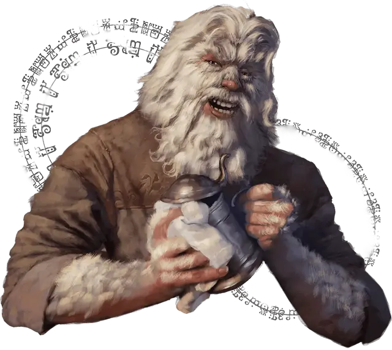

Мирош Кселбрин
Miros Xelbrin
Средний Гуманоид (Человек домарец), нейтрально-добрый, именной НИП

Класс Доспеха 10
Хиты 22 (4к8 + 4)
Скорость 30 футов
| мод | спас | ||
|---|---|---|---|
| СИЛ | 16 | +3 | +3 |
| ЛОВ | 10 | +0 | +0 |
| ТЕЛ | 15 | +2 | +2 |
| мод | спас | ||
|---|---|---|---|
| ИНТ | 11 | +0 | +0 |
| МДР | 12 | +1 | +1 |
| ХАР | 14 | +2 | +2 |
Навыки Восприятие +3, Запугивание +4
Чувства пассивное Восприятие 13
Языки Общий
Опасность 0
Бонус мастерства +2
Особенности
Информация для отыгрыша. Хозяин постоялого двора Мирош ранее был одним из цирковых развлечений, выступая в качестве «Йети», из-за бочкообразного тела и густых, белых волос, покрывающих его руки, грудь, спину и голову. Если страдают Золотые Поля, страдает и его дело, потому он прилагает усилия, чтобы защитить их.
Идеал. : «Как учит Изумрудный Анклав, цивилизация и дикая природа должны учиться сосуществовать.»
Привязанность. : «Можешь смеяться надо мной как тебе вздумается, но не говори плохо о мой таверне и моих работниках.»
Слабость. : «Когда что-то меня расстраивает, я склонен впадать в ярость.»
Действия
Медвежий хват. . Рукопашная атака оружием: +5 к попаданию, досягаемость 5 фт., одна цель. Попадание: 5 (1к4+3) дробящий урон и цель становится схваченной (Сл высвобождения 13) и получает 5 (1к4+3) дробящего урона в начале каждого хода Мироша, пока тот удерживает цель. Мирош не может атаковать пока борется.
Дубинка. . Рукопашная атака оружием: +2 к попаданию, досягаемость 5 фт., одна цель. Попадание: 5 (1к4+3) дробящего урона.
Тяжёлый арбалет. . Дальнобойная атака оружием: +2 к попаданию, дистанция 100/400 фт., одна цель. Попадание: 5 (1к10) колющего урона. Мирош носит с собой 10 болтов для арбалета.